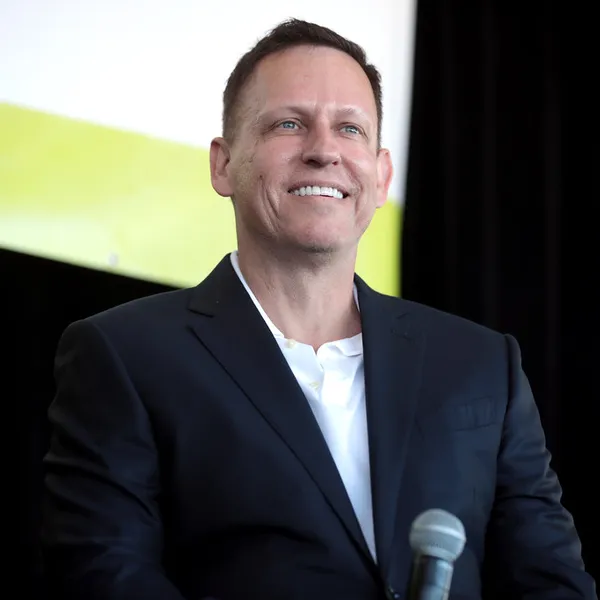
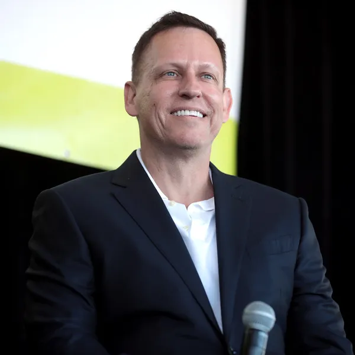

Meditations
by Marcus Aurelius
In the course of those readings and my study of stoicism, a lot has changed. Marcus Aurelius has guided me through breakups and getting married, through being relatively young and poor and relatively older and well-off. His wisdom has helped me with getting fired and with quitting, with success and with struggles. I’ve carried him to close to a dozen countries and moved him to multiple houses. I’ve turned to him for articles and books and casual dinner conversation. The one pristine white cover is now its own shade of tan, but with every read, every time I’ve touched the book, I’ve gotten something new or been reminded of something timeless and important.
— Ryan Holiday


Foundation (7 books)
by Isaac Asimov
In terms of sci-fi books, I think Isaac Asimov is really great. I like the Foundation series, probably one of the all-time best.
— Elon Musk


The Beginning of Infinity
by David Deutsch
We are not running out of resources. Sustainability is an emotional argument easily countered by history, physics and knowledge but it has become a virtue-signaling religion and people refuse to educate themselves. Read “The Beginning of Infinity,” rewrite your brain, and become…
— Naval Ravikant


Man's Search for Meaning
by Viktor E. Frankl
I think that the thing that struck me most about um Man's Search for Meaning was he has this paragraph in the book where he says, you know, we ask what is the meaning of life and he says that's wrong life is asking us what meaning we are going to create with our actions
— Ryan Holiday


Surely You're Joking, Mr. Feynman!
by Richard P. Feynman
I loved him because Feynman was one of the first characters that I encountered that did science and serious work and was accomplished in so-called real life. He was a character, he was a happy person. He was deeply philosophical, he didn’t take himself nor life too seriously. He appreciated the mysteries of life, he appreciated living life and he had a lot of fun along the way. To me, he was like a full-stack intellectual hacker of life. And was just very inspirational to me as a kid, growing up.
— Naval Ravikant


Harry Potter series
by J.K. Rowling
[JK Rowling's] position in the culture is kind of weirdly split right because on the one hand there's her continuing legacy as the author of The Wizard books and on the other hand there's like almost her entire public persona that which we mostly experienced through Twitter which is basically obsessive bigotry towards trans people that's become sort of her definitive thing.
— Natalie Wynn (Contrapoints)


Lord of the Rings (3 books)
by J. R. R. Tolkien
Lord of the Rings [was my favorite book growing up]
— Elon Musk

 



Zero to One
by Peter Thiel
Replace the Micheal jordan book with Zero To One and it’s a good list
— MrBeast


The Republic
by Plato
so naturally led me to read one to read the Republic which is arguably Plato's greatest work if not one of the greatest political western philosophies of all time what a title everyone and again I was very happily surprised how much I enjoyed it
— PewDiePie


Ficciones
by Jorge Luis Borges
Try Borges’ short stories next, in “Collected Fictions” or “Labyrinths.”
— Naval Ravikant


The Great Gatsby
by F. Scott Fitzgerald
Re-Read The Masters You were in high school when you read The Great Gatsby for the first time. You were just a kid when you read The Count of Monte Cristo or had someone tell you the story of Odysseus. The point is: You got it right? You read them. You’re done, right? Nope. We cannot be content to simply pick up a book once and judge it by that experience. It’s why we have to read and re-read.
— Ryan Holiday


Siddhartha
by Hermann Hesse
Depends what you want. Science or philosophy or...? Beginning of Infinity, Rational Optimist, Skin in the Game are all amazing. If you want more eastern philosophy, try Siddhartha, I am That, Jed McKenna.
— Naval Ravikant


Letters from a Stoic
by Seneca
Seneca one of my favorite stoic philosophers says, in fact, that we must read like a spy in the enemy's camp. Seneca writes letters from a stoic. He's a stoic philosopher and yet the philosopher he quotes most in his letters is Epicurus - his rival right. He says "I will quote a bad author if the line is good".
— Ryan Holiday


Stories of Your Life and Others
by Ted Chiang
Love Ted Chiang, but don’t think he needs my ideas.
— Naval Ravikant


Why We Sleep
by Matthew Walker
New podcast is live: #126 – Matthew Walker, Ph.D. (@sleepdiplomat): Sleep and immune function, chronotypes, hygiene tips, and addressing questions about his book. https://peterattiamd.com/matthewwalker4/
— Peter Attia


The Count of Monte Cristo
by Alexandre Dumas
1) The taste of (cold) revenge is by far the most underrated human experience. Not for cowards. Not be good for society except when revenge does not lead to more revenge. 2) Written ~170 y ago. I've never read more limpid more recent page turner.#Lindy = #ergodic seller! https://t.co/ODPZoPB6pb
— Nassim Taleb


The Wealth of Nations
by Adam Smith
For example, instead of reading a business book, pick up Adam Smith’s The Wealth of Nations. Instead of reading a book on biology or evolution that’s written today, I would pick up Darwin’s Origin of the Species. Instead of reading a book on biotech right now that may be very advanced, I would just pick up The Eighth Day of Creation by Watson and Crick. Instead of reading advanced books on what cosmology and what Neil Degrasse Tyson and Stephen Hawking have been saying, you can pick up Richard Feynman’s Six Easy Pieces and start with basic physics.
— Naval Ravikant


The Odyssey
by Homer
I also have a really old edition of The Iliad and the Odyssey which I'm very proud of a lot. It's probably one of my favorite books ever written highly recommend reading it.
— PewDiePie


Snow Crash
by Neal Stephenson
Lord of Light, Snow Crash, Borges and Ted Chiang short stories.
— Naval Ravikant


Hitchhiker's Guide to the Galaxy
by Douglas Adams
I read Hitchhiker's Guide to the Galaxy and basically what Douglas Adams was saying is: we don't really know what the right questions are to ask. The question is not "What's the meaning of life?" [...] In that book, which is really sort of an existential philosophy book disguised as as humor, they come to the conclusion that the real problem is trying to formulate the question. And to really have the right question you need a much bigger computer than earth. I think one way of characterizing this would be: The universe is the answer. What are the questions? The more we can expand the scope and scale of consciousness the better we can understand what questions to ask about the answer that is the universe. The more we expand consciousness to become a multi-planet species and ultimately a multi-stellar species, the more we have a chance of figuring out what the hell is going on.
— Elon Musk


Permutation City
by Greg Egan
Current reading list. Most into “The Beginning of Infinity” and “What is Life?” at the moment. pic.twitter.com/L1JncsXiIL
— Naval Ravikant


Thinking, Fast and Slow
by Daniel Kahneman
Also, I have been hyping Daniel Kahneman’s recent book, because it is largely an exposition of his research of thirty-five and forty years ago, with filtering and modernization.
— Nassim Taleb


Bible
by
Envy is a syndrome, a complex of poisonous thoughts and feelings about people who have what we want but cannot get. It's not simply wanting what another person has. That's greed, which is a much more wholesome sin. Because wanting what someone has can inspire us, it can fuel our own ambition, it can even motivate us to improve ourselves. And sometimes people call that envy, but it's not really envy. It's emulation, or admiration. At worst it's what the Bible calls "coveting."
— Natalie Wynn (Contrapoints)


Dune (6 books)
by Frank Herbert
Dune series by Herbert also brilliant. He advocates placing limits on machine intelligence.
— Elon Musk


The Story of Civilization (11 books)
by Will Durant, Ariel Durant
Age of Napoleon [is my favorite], so far. The first books are a little dry. Gets much better when Ariel is co-author.
— Elon Musk


Culture (10 books)
by Iain Banks
If you must know, I am a utopian anarchist of the kind best described by Iain Banks
— Elon Musk


The Illiad
by Homer
For maximum alpha, complete with fighting for princesses, the Iliad. Penguin audiobook at 1.25X speed is best. It was meant to be a spoken, not written, story. https://books.apple.com/us/audiobook/the-odyssey/id1479199452
— Elon Musk


Poor Charlie's Almanack
by Charles T. Munger
[The five wisest people living today are] Jed McKenna, @KapilGuptaMD, Charlie Munger, @nntaleb One, and one who won’t want to be named
— Naval Ravikant


Life 3.0
by Max Tegmark
I'm gonna read Life 3.0 By Max Tegmark which is, he describes AI and how it, how it may or may not affect us in the future. He is a Swedish genius. I don't know if his genius, but he, the people compared to the Swedish Elon Musk and Elon Musk even praises the book. My parents recommended this as well, so I started already a little bit, and it's very interesting
— PewDiePie


Awareness
by Anthony de Mello
Popper, Deutsch, Schopenhauer, Osho, Krishnamurti, DeMello, Seneca, Kapil Gupta, Taleb, there are too many...
— Naval Ravikant


Skin in the Game
by Nassim Taleb
Nasim Talab had that great blog post and chapter in his book Skin in the Game about the intolerant minority.
— Naval Ravikant


Tao Te Ching
by Lao Tzu
Siddhartha, Vasistha’s Yoga, Bhagavad Gita, Tao Te Ching. I’m always going through one of these books at any given time and usually rereading for inspiration.
— Naval Ravikant


Range
by David Epstein
So there's a book behind you I was just thinking about when I think of you, one of my favorite books, Range. Have you read Range?
— Ryan Holiday


The Sovereign Individual
by James Dale Davidson, William Rees-Mogg
I think what does happen is that we're moving to the age of the sovereign individual. If you haven't read that book, I highly recommend it, even though it's almost 20 years old. It's very prophetic.
— Naval Ravikant


Superintelligence
by Nick Bostrom
Struggling hard to finish the superintelligence book. One 2 chapters left. Must... be... strong...
— Andrej Karpathy


Nineteen Eighty-Four
by George Orwell
I read 1984 by George Orwell before and it's one of my favorite books. It was a book that really left that impact on me and the meaning and the story tied together really gripped me and I think about it a lot.
— PewDiePie


The Book of Life
by Jiddu Krishnamurti
Jiddu Krishnamurti, who is a lesser known guy, an Indian philosopher who lived at the turn of the last century is extremely influential to me. he’s an uncompromising, very direct person who basically tells you to look at your own mind at all times. So I have been hugely influenced by him. Probably the best book of his that I like is one called The Book of Life, which is excerpts from his various speeches and books that are stitched together.
— Naval Ravikant


The 48 Laws of Power
by Robert Greene
We’ve also had many of my favorite authors stop by and sign copies of their books, such as: The 48 Laws of Power by Robert Greene, The Subtle Art of Not Giving a F*ck by Mark Manson, From Strength to Strength by Arthur Brooks, and Finding Ultra by Rich Roll.
— Ryan Holiday


The Martian
by Andy Weir
I rarely give out 5/5, but this book was SO. GOOD. My usual complaints about many sci-fi books is that they spend a lot of time frolicking around with extended descriptions of vistas or facial features, or other basic literature mambo jambo. Instead, I am drawn to technical consistency, details and intriguing ideas. If you're like me, you will LOVE this book - it gets very nerdy very fast and stays that way for the entire duration of the book. The book offers a thrilling ride filled with science, calculations, and humor mixed in. There are many references to technical details spanning chemistry, biophysics, mechanical engineering, orbital mechanics, etc. The result is a believable and consistent backdrop that envelops the story. I had a lot of fun, found plenty food for thought, and I learned a lot! What else can you ask for? 5/5. 5/5
— Andrej Karpathy


The Great Challenge
by Osho
Popper, Deutsch, Schopenhauer, Osho, Krishnamurti, DeMello, Seneca, Kapil Gupta, Taleb, there are too many...
— Naval Ravikant


Total Freedom
by Jiddu Krishnamurti
From “Total Freedom.” It’s all over but particularly “A Dynamic Society” and “Living in Ecstasy.” pic.twitter.com/sPhZSMwxPh
— Naval Ravikant


The Power Broker
by Robert A. Caro
There might be a week where I read several books and then there might be a couple weeks where i'm not reading or I'm just really struggling with one book like a book like The Power Broker might take me a couple weeks but I'm always reading and I'm reading short books and long books.
— Ryan Holiday


The Moon Is a Harsh Mistress
by Robert A. Heinlein
I think [The Moon is a Harsh Mistress] is Heinlein's best book, honestly.
— Elon Musk


The Gene
by Siddhartha Mukherjee
More recently, I’ve gained a lot from reading a diverse set of books and authors including Under a White Sky by Elizabeth Kolbert, On Immunity by Eula Biss, The Gene by Siddhartha Mukherjee, and Eradication by Nancy Stepan.
— Bill Gates


The Black Swan
by Nassim Nicholas Taleb
The Bed of Procrustes: Philosophical and Practical Aphorisms, by Nassim Taleb, who is famous for The Black Swan and Fooled by Randomness. I sort of like his collection of ancient wisdom, In the Bed of Procrustes.
— Naval Ravikant